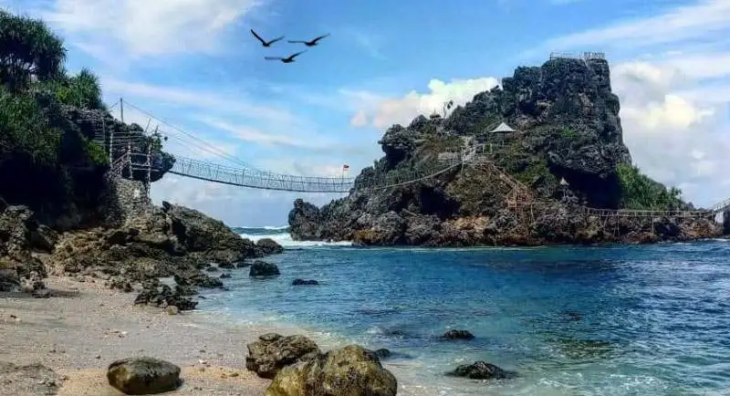
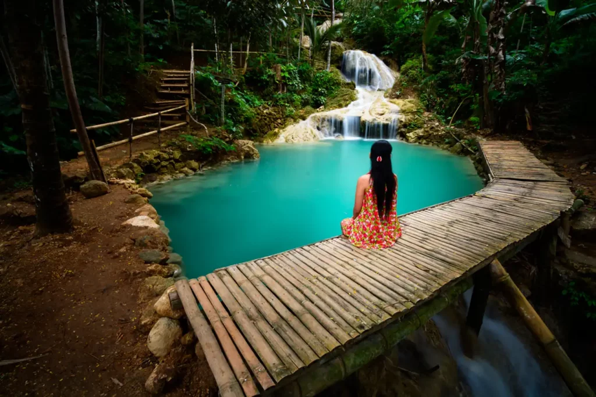
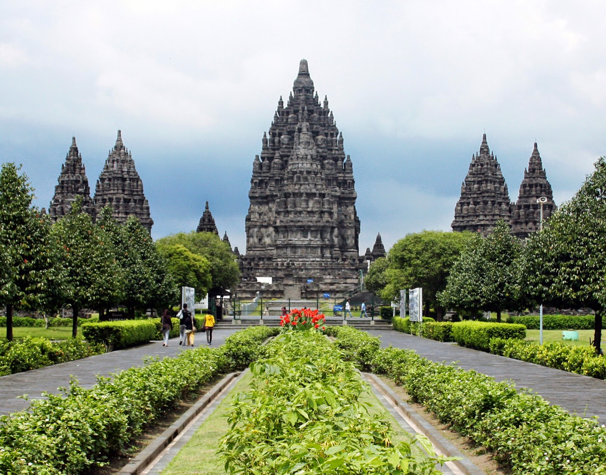
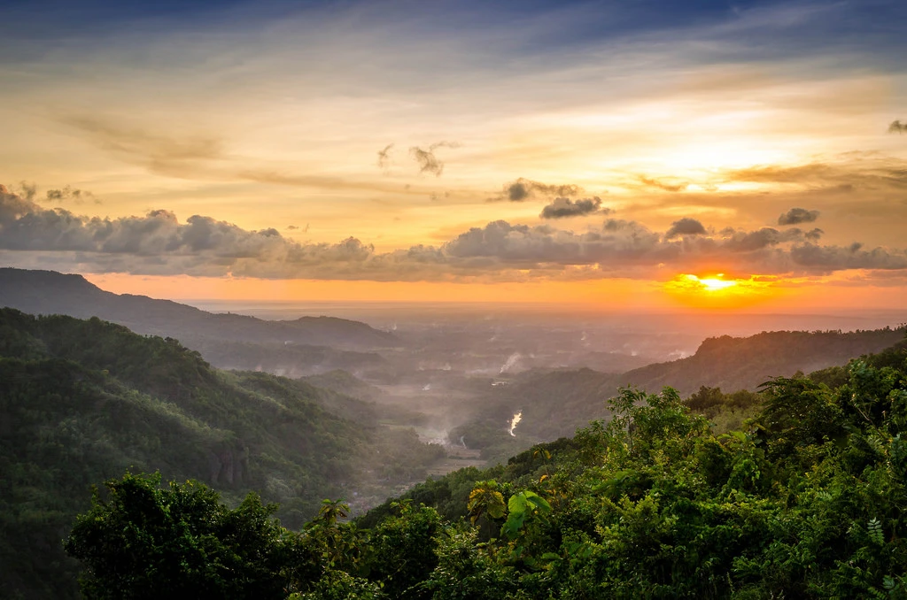
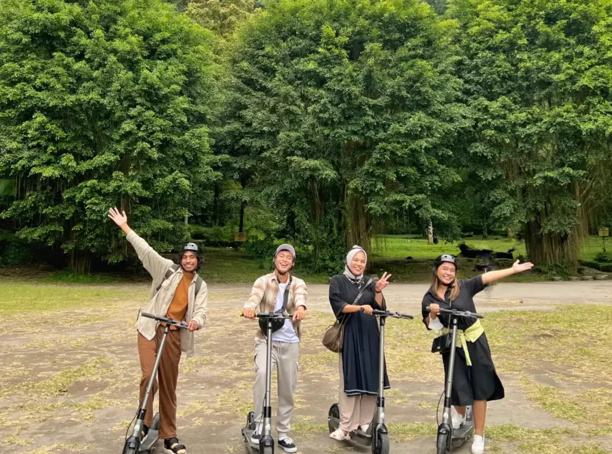
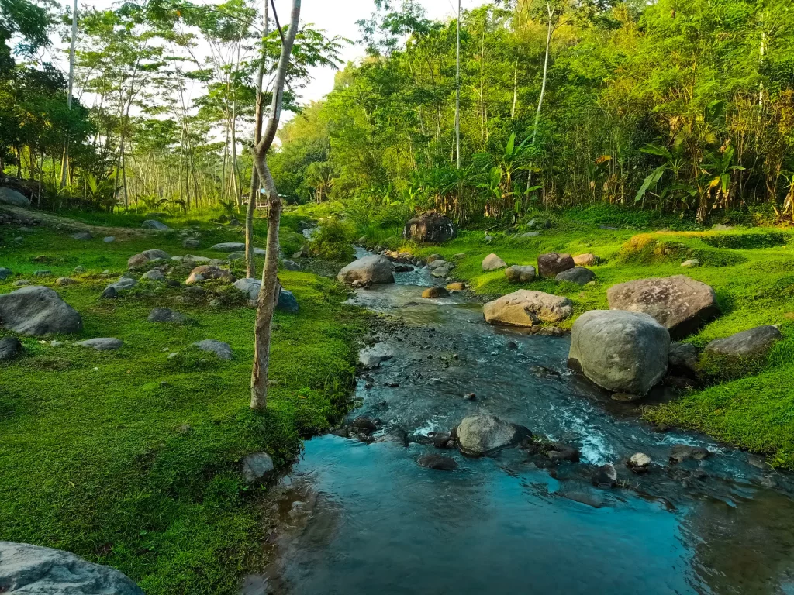
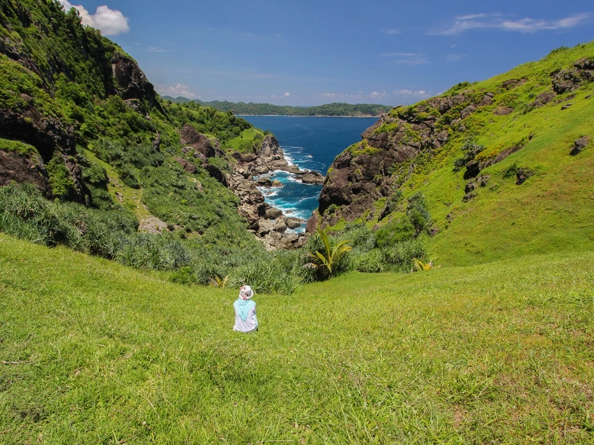
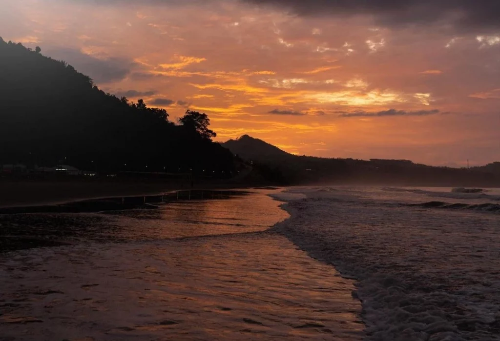

| NO |
FOTO |
OBYEK WISATA |
DESKRIPSI |
1. |
 |
Pantai-Nglambor |
Wisata pantai ini berada di bagian selatan Gunung Kidul, tepatnya di antara Pantai Siung dan Pantai Jogan. Pantai ini punya air yang jernih banget dan terumbu karang di dasar laut yang cantik-cantik. Makanya kamu bisa banget snorkeling di pantai yang jadi destinasi wisata Jogja terhits ini. |
| Dusun Ngandong, Desa Purwodadi, Kecamatan Tepus, Kabupaten Gunung Kidul |
2. |
 |
Sungai Mudal |
Sungai Mudal merupakan tempat wisata berupa sumber mata air yang terletak di Pegunungan Menoreh. Oleh karena itu, tempat ini memiliki suasana yang sejuk dan udara yang segar. Di sini, kamu bisa berenang di kolam aliran mata airnya, berkemah, atau bermain flying fox. |
| Dusun Banyuganti, Desa Jatimulyo, Kecamatan Girimulyo, Kabupaten Kulonprogo |
3. |
 |
Candi prambanan |
Kurang afdal rasanya ke Jogja kalo nggak ke tempat wisata Jogja yang paling populer, yaitu Candi Prambanan. Menjadi candi Hindu terbesar di Indonesia, Candi Prambanan terdiri dari halaman luar dan tiga pelataran. Di sini kamu bisa ke candi-candi kecil lain, taman-taman, penangkaran rusa, sampai Museum Prambanan. |
| Jl. Raya Solo-Yogyakarta No. 16, Kranggan, Bokoharjo, Kecamatan Prambanan, Kabupaten Sleman |
| 4. |
 |
Taman sari |
Taman Sari Yogyakarta termasuk bagian dari keraton Yogyakarta, yang dulunya merupakan taman air milik keluarga keraton sekaligus tempat mandi para sultan. Walaupun bangunannya udah nggak utuh lagi, tetapi sisa-sisa bangunan ini masih menarik minat wisatawan lho, karena tampilannya yang cantik. |
| Patehan, Kraton, Kota Yogyakarta |
5. |
 |
Puncak Kebun Buah Mangunan |
Puncak Kebun Buah Mangunan terkenal sebagai spot Negeri di Atas Awan. Ini karena letaknya yang berada di ketinggian 150-400 mdpl, sehingga banyak kumpulan kabut putih yang terlihat seperti awan. Di sini, kamu bisa menikmati pemandangan sunrise/sunset serta mengambil buah langsung dari pohonnya! |
| Jl. Imogiri – Dlingo, Sukorame, Mangunan, Kecamatan Dlingo, Kabupaten Bantul |
6. |
 |
Karang Pramuka |
Karang Pramuka sebenarnya merupakan sebuah Bumi Perkemahan yang menjadi tempat outbond dan rekreasi. Di sini terdapat lapangan luas dengan pemandangan yang cantik dan asri. Selain menikmati pemandangan dan berfoto, kamu juga bisa main skuter yang disewakan lho! |
| Gang Petruk Kaliurang Timur, Kaliurang, Kecamatan Pakem, Kabupaten Sleman |
7. |
 |
Ledok Sambi |
Ledok Sambi merupakan destinasi wisata Jogja yang menyuguhkan pemandangan gunung berapi aktif dengan taman alam yang dikelilingi sawah hijau. Banyak kegiatan yang bisa kamu lakukan di sini nih, mulai dari main air di sungai, piknik, outbond, sampai dengan camping! |
| Jl. Kaliurang KM 19 No. 2, Kecamatan Pakem, Kabupaten Sleman |
8. |
 |
Bukit Pengilon |
Wisata yang satu ini adalah bukit asri kehijauan dengan lokasi yang cukup terpencil sehingga suasananya tenang. Bukit hijau ini berada di ketinggian yang langsung dibelah dengan hamparan laut. Jadi, pengunjung bisa menikmati keindahan bukit dan juga laut secara bersamaan. Selain itu, kamu juga bisa camping di sini, lho! |
| Kecamatan Tepus, Kabupaten Gunung Kidul, DIY |
9. |
 |
Pantai Midodaren |
Wisata alam yang satu ini letaknya ada di tepian wilayah Gunung Kidul. Pantai ini memiliki pasir yang lembut dan air laut yang jernih. Di Pantai Midodaren kamu bisa mencoba beberapa wahana permainan, bermain ayunan di pinggir pantai, sampai dengan berkemah. |
| Desa Besuki, Kecamatan Besuki, Kabupaten Tulungagung |